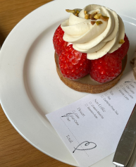

ㅎ
ㅎ
so hot 요즘 떠오르고 있는 빵은?
-
소금빵
버터 양이 차지하는 비중이 다른 빵에 비해 높다. 버터가 반죽 안에서 녹으면서 공기층이 형성돼 식감은 쫄깃해지고, 빵 겉에는 버터가 녹아 바삭해지게 됐다. 여기에 소금을 빵 위에 뿌려 자칫 느끼해질 수 있는 빵맛을 살린 특징을 가진다.
-
크로플
크로와상과 와플의 합성어.
크로와상 반죽을 굽는 게 아닌 와플 기계에 눌러 겉바속촉의 매력을 살린다. 취향에 따라 아이스크림 및 과일을 올려 먹기도 한다. -
크림빵
옛날 도넛을 현대화한 요즘 떠오르고 있는 인기 메뉴이다. 도넛 속에 다양하게 필링을 가득 넣은 것이 특징이다.
매거진 빵을 위한, 빵에 의한, 빵에 진심인 자들의 모음집
키워드 추천 누구와 어디든지 빵과 함께 할 수 있다? 있다!
베스트 리뷰어 베스트 빵돌이 빵순이 빵가워!
성심당은 내 고향이다영
집의 기록상점
+88
타르트=집의 기록상점, 공식입니다. 그냥 기억하세요. 타르트의 세계로 안내해준 가게 타르트의 특징인 겉바속촉을 제대로 느끼면서,, 옥수수의 진한 향이 나오다니,, 둘이 가서 한 명 옆에서 쓰러져도 아랑곳하지 않을 맛,, 내부에는 아기자기한 소품들이 많아요! 근데 유일한 단점은 좁아서 먹고가기 힘들어요ㅠㅠ
대형카페는 사랑이지연

에플린크
+77
보는 재미와 먹는 재미 두마리 토끼를 잡을 수 있는 곳! 보이는 예쁨만큼 맛도 예쁘다니, 금상첨화란 말이 여기서 시작됐나요? 유명해지지말아라......없어지지 말아라...
빵을 사랑해연
광장시장
찹쌀꽈배기 +63
찹쌀꽈배기 +63
종로구에 왔는데 여길 안간다? 붕어빵에 단팥빠진 소리입니다. 줄이 길긴하지만 빠지는 속도가 비교적 빠른 편이라서, 진짜 꼭 먹어보세요. 찹살꽈배기도 맛있지만 찹쌀도너츠도 너무 맛있었어요..